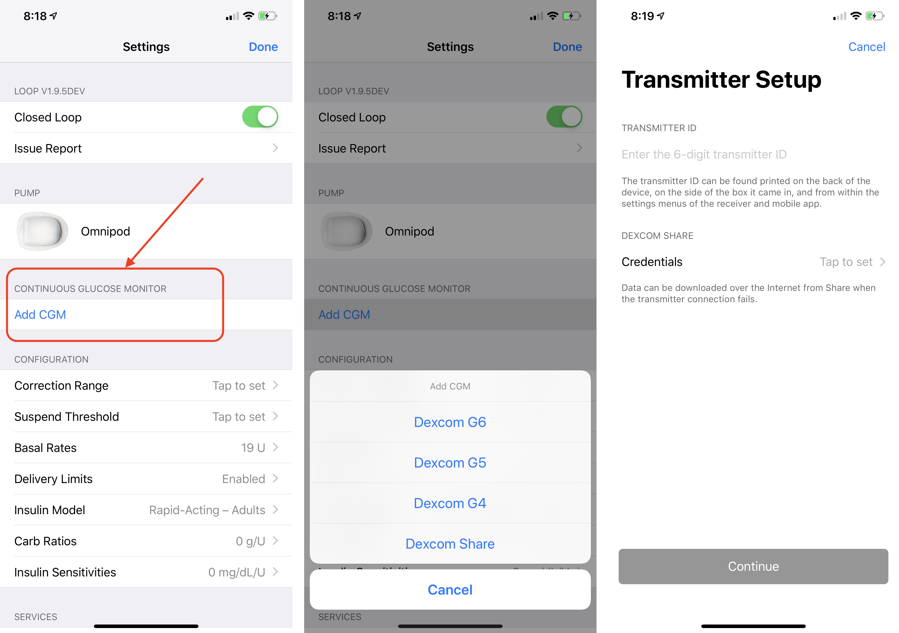
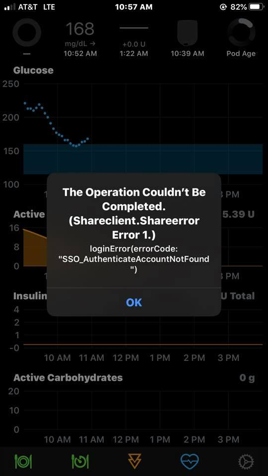

Add CGM¶
Now we need to add a CGM source so that Loop has BG data. From the Loop settings screen, select Add CGM.

The standard selections available will be:
- Dexcom G6
- Dexcom G5
- Dexcom G4
- Dexcom Share
If you added a compatible Medtronic pump earlier in the setup process, then you will also see an option for the compatible Medtronic sensor that works with that same pump. If you are using a compatible MDT sensor, select that option and the CGM data will be uploaded to Loop when pump status is updated.
About Dexcom Share credentials¶
Note that you do NOT need your Share account info listed in Loop settings if you are using a G4, G5, or G6 system. The transmitter ID is sufficient. In fact, I recommend that you leave your Share account empty so that you don't accidentally become internet-dependent for CGM data when you forget to update your transmitter ID when you start a new transmitter. Just leave the Share credentials blank.
For all selections, the Dexcom Share credentials (in other words, account login) is the same as what you used to log in to the active Dexcom app on your iPhone. Dexcom Share account is not always the same login info as your Dexcom Clarity account. For G4 users, the Share account is found in the account tab on the app. For G5/G6 users, unfortunately, there is no information in the app displaying what your account name is. The information is entered when you first log in to the app and then is never displayed again, nor visible under any information screens. If you have forgotten your G5/G6 account info, you can delete the Dexcom app and redownload it to try logging in again. This will not cause a restart of any sensor sessions in progress.
If you do not enter your Share credentials correctly, you will get an error when Loop tries to access your Share account to backfill CGM data. That error message will look like below. If you see that message, delete your Share account from Loop settings and try again...or just leave it out and depend on your transmitter ID.

Dexcom G5 and G6¶
The Dexcom G5 and G6 options only require the addition of the active transmitter ID, and the matching Dexcom app to be running on the Loop iPhone. You do not have to add your Dexcom Share account credentials, but if you do, make sure they match what you originally entered into your Dexcom app.
When you change transmitters, you will need to select the Delete CGM button at the very bottom of the CGM info page in Loop. Then you will select your Dexcom system again and add the new transmitter ID. You cannot just tap on your old transmitter ID to update it.
If you don't update your transmitter ID when you change active transmitters, your Loop will be forced to go to your Dexcom Share server to get your CGM data and will not work without cell or wifi connection. When Loop is using data from Dexcom Share servers, a small cloud will appear above the BG reading in Loop and should tip you off that maybe you forgot to update your transmitter ID.
Dexcom G4¶
Dexcom G4 users will need the Dexcom G4 Share2 app active on their iPhone and paired to their Dexcom G4 Share receiver.
Dexcom Share¶
The Dexcom Share selection is primarily for people who wish to test Loop function without a local CGM source and who are not running the Dexcom app on their Loop iPhone. This selection will require login access to a Dexcom Share account with live data and active internet connection in order to work.
Spike Users¶
Users who are using Spike app to access other CGM types (or to avoid using the Dexcom app), you will need to follow the directions contained within the Spike app in order to build/modify Loop with Spike. Loop does not natively support Spike app and does not currently plan to. You are responsible for modifying or adapting Loop in order to use Spike so that it is an available option as a CGM source.
Next Step: Configuration¶
Now that you have added your CGM source, we need to complete the configuration and settings in your Loop. Please head over to the Configuration page for guidance with this important part of Loop's setup.